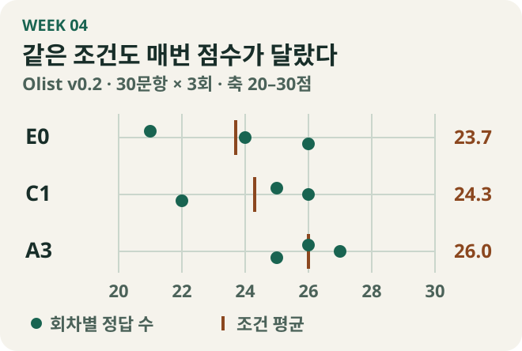

11월 1일, 모델에 여섯 칸짜리 계획을 먼저 쓰게 했더니 Olist v0.2 30문항 중 23개를 맞혔다. 11월 2일에는 같은 조건으로 다시 실행했고 26개가 정답이었다. 첫날 틀린 bird-012가 맞았고, 첫날 맞힌 kmk-004는 틀렸다. 새 지시문을 넣기 전부터 점수와 문항별 정오가 달라졌다. 4주차에는 이 흔들림 안에서 무엇을 계획의 효과로 볼 수 있는지, 그리고 계획에 무엇을 더 적게 할지 차례로 시험했다.
확정된 30문항에서는 같은 총점부터 다시 읽었다
3주차에 맡기로 한 A3를 확정된 Olist v0.2 평가셋에서 실행하는 것부터 시작했다. 10월 30일에 Luna로 SQL을 바로 쓰는 E0와 계획을 먼저 쓰는 A3를 각 한 번 돌렸다. SQL 생성 지시문과 10초 실행 제한은 같았고, 정답은 각각 23/30이었다. A3에서 새로 맞힌 문항과 새로 틀린 문항이 세 개씩 있었다. 그중 kmk-001은 계획에서 한 해에만 등장한 카테고리를 포함하라는 조건이 빠져 485행 대신 392행을 반환했다. 모델 호출은 E0의 30회에서 A3의 60회로 늘었다.
10월 31일에는 같은 30문항으로 Codex Luna·Terra·Sol과 Claude Haiku·Sonnet·Opus의 E0와 A3를 각각 한 번씩 실행했다. Codex는 CLI의 중간 추론 설정, Claude는 Messages API의 기본 설정을 썼다. 비교는 같은 모델 안에서 계획을 추가했을 때의 변화로 읽었다.
여섯 모델의 10월 31일 비교 결과
| 모델 | E0 정답 | A3 정답 |
|---|---|---|
| Codex Luna | 25/30 | 25/30 |
| Codex Terra | 27/30 | 25/30 |
| Codex Sol | 28/30 | 24/30 |
| Claude Haiku | 27/30 | 25/30 |
| Claude Sonnet | 25/30 | 25/30 |
| Claude Opus | 27/30 | 24/30 |
정답 수는 두 모델에서 같았고 네 모델에서 줄었다. 10월 31일 Luna의 kmk-001은 전날과 다른 곳에서 틀렸다. 계획에는 두 해 모두 특정 주문 상태를 제외하라고 적혀 있었다. 생성 SQL에서는 AND와 OR가 묶인 방식 때문에 상태 조건이 2018년에만 적용됐다. 한 문항에서도 날짜에 따라 빠진 지점이 달랐다. 계획을 더 구체적으로 쓰게 한 뒤, 그 내용이 실제 SQL에도 들어가는지 볼 필요가 있었다.
같은 여섯 칸에서 문항이 뒤집혔다
11월 1일에는 최종 결과, 단계별 관계, 조인과 행 수, 비교할 짝, 재사용과 실행 위험, SQL 구성 순서를 여섯 칸에 적게 했다. 중간 결과마다 어떤 입력을 받고, 한 행이 무엇을 뜻하며, 다음 단계에 어떤 열을 넘기는지도 적게 했다. 이날 E0의 첫 실행은 권한 오류로 끝나 재실행 값만 썼다. 다시 돌린 E0는 25/30, 여섯 칸 A3는 23/30이었다. E0에 비해 A3는 kmk-004를 새로 맞혔고, bird-012를 포함해 세 문항을 새로 틀렸다.
11월 2일에 여섯 칸 계획을 그대로 다시 썼다. run_a3.py compare는 두 기록을 같은 실험 조건의 반복으로 분류했다. 두 실행 사이에 bird-012를 포함한 네 문항을 새로 맞혔고 kmk-004를 새로 틀렸다. SQL 텍스트는 30문항 중 24개에서 달라졌다. 첫날 A3에서 나아졌다고 본 문항이 재실행에서는 틀렸으므로, 첫날의 개선과 악화를 각각 계획의 효과로 해석하기 어려웠다.
계획에 더 적으면 빠뜨리는 조건이 줄어들까?
계획에 있었던 조건이 SQL에서 빠졌다면, SQL을 내놓기 직전에 한 번 더 점검하면 어떨까? 반환 열과 조인 기준, 정렬·개수 제한을 질문과 대조하라는 지시를 여섯 칸에 붙였다. 시간 초과에는 다른 가설을 세웠다. 첫 구매 이력처럼 여러 곳에서 쓰는 중간 결과를 계획에 표시하면, SQL도 한 번 계산한 값을 다시 쓸까? 이번에는 먼저 확정할 대상과 재사용할 중간 결과를 적게 했다.
두 실행은 모두 24/30이었다. 재사용을 계획에 써도 생성 SQL이 그 구조를 따르지 않은 경우가 있었다. 계획에 문장을 더한 것만으로는 어디서 문제가 풀리거나 남았는지 알기 어려웠다. 계획과 SQL을 나란히 놓고 지시가 실제 쿼리에 반영됐는지 봐야 했다.
11월 3일에는 계획을 최종 결과, 필요한 정보, 중간 결과, 연결과 계산, 최종 조건의 다섯 항목으로 다시 썼다. 중간 결과의 행 단위와 다음 단계에 넘길 열은 그대로 드러나게 했다. 여섯 칸과 다섯 항목은 각각 26/30이었지만, kmk-004가 새로 맞고 kmk-003이 새로 틀렸다. 둘 다 같은 지시문을 반복했을 때 이미 정오가 바뀐 문항이었다.
각 중간 결과에 포함할 대상과 제외할 대상을 명시하는 지시도 다섯 항목에 붙여 봤다. 예를 들어 kmk-003에서는 전년 동월을 정확히 연결해도 어느 고객을 셀지에 따라 답이 달라졌다. 2018년 2월에 주문한 고객은 6,469명이었고 상품 항목이 있는 주문으로 좁히면 6,468명이었다. 대상을 따로 적게 한 실행의 정답은 23/30이었다. 각 변형을 한 번씩 돌린 결과이므로 어떤 지시를 추가하면 점수가 오르거나 내린다고 판단하기는 어려웠다.
11월 1~3일 계획 지시문별 단일 실행 기록
| 날짜 | A3 계획 조건 | 정답 | 실행 성공 |
|---|---|---|---|
| 11/1 | 여섯 칸 | 23/30 | 25/30 |
| 11/2 | 여섯 칸 재실행 | 26/30 | 26/30 |
| 11/2 | 여섯 칸 + SQL 출력 전 점검 | 24/30 | 25/30 |
| 11/2 | 여섯 칸 + 재사용·위험 지시 | 24/30 | 26/30 |
| 11/3 | 다섯 항목 | 26/30 | 27/30 |
| 11/3 | 다섯 항목 + 집계 포함·제외 대상 | 23/30 | 25/30 |
여기까지는 어느 계획 문구가 나은지 보고 있었다. 그런데 저장한 기록을 대조해 보니 일부 E0와 A3 비교에서는 SQL 생성 지시문도 달랐다. A3가 더 맞힌 문항을 발견해도, 그 차이가 계획에서 나왔는지 두 번째 지시문에서 나왔는지가 남았다.
계획 호출과 SQL 지시문을 따로 비교했다
그럼 SQL 지시문을 그대로 두고 계획 호출만 더해 보면 어떨까? E0와 A3 사이에 C1을 넣었다. E0와 C1은 둘 다 바로 SQL을 쓰고 지시문만 다르다. C1과 A3는 같은 SQL 지시문을 쓰고, A3 쪽에만 다섯 항목의 풀이 계획이 붙는다. 이 두 비교를 나눠야 평균이 올랐을 때 무엇을 바꿨는지 말할 수 있었다.
Olist v0.2의 같은 30문항, DB, 스키마를 두고 gpt-6-luna의 중간 추론 설정, Codex CLI 0.166.0, SQL 실행 제한 10초를 공통으로 사용했다. 매 회차 E0 → C1 → A3 순으로 실행했고 세 회차를 마쳤다. 이때부터 총점과 함께 문항마다 세 번 중 몇 번을 맞혔는지 기록했다.

| 조건 | 계획 호출 | SQL 지시문 | 1회 | 2회 | 3회 | 평균 /30 |
|---|---|---|---|---|---|---|
| E0 | 없음 | 기본 | 21 | 24 | 26 | 23.7 |
| C1 | 없음 | A3용 | 25 | 26 | 22 | 24.3 |
| A3 | 있음 | A3용 | 26 | 27 | 25 | 26.0 |
판정 기준은 실행 전에 정했다. 같은 문항의 정답 횟수가 두 번 이상 늘면 개선, 두 번 이상 줄면 악화로 셌다. 예를 들어 1/3에서 3/3이 되면 개선이고, 2/3에서 3/3이 되면 한 번의 차이로 남긴다. 개선 문항 수에서 악화 문항 수를 뺀 값이 +2 이상이면 탐색 기준을 충족한다고 정했다.
E0와 A3를 비교하면 판매자 ID가 빠진 bird-012와 중간 계산 열까지 반환한 js-002가 일관되게 개선됐고, 일관되게 악화된 문항은 없었다. 이 비교에는 계획 호출과 SQL 지시문 두 변경이 들어 있다. 같은 SQL 지시문을 쓴 C1과 A3에서는 평균이 24.3에서 26.0으로 올랐다. 일관되게 개선된 문항은 bird-012 하나, 악화된 문항은 0개였다. 계획만의 효과는 사전에 정한 문항별 기준에 따라 판단을 보류했다.
기본 SQL 지시문을 양쪽에 써서 다시 비교했다
위 실험과 별도로, 이번에는 E0와 A3의 SQL 생성 지시문을 기본 지시문으로 통일했다. Olist v0.2의 30문항을 조건마다 세 번 실행했고, 실제 호출에서 두 조건의 SQL 지시문 해시가 같은지도 확인했다. 각 회차 E0의 정답 수는 26·23·25개, A3는 24·28·26개였다. E0의 평균은 24.7개, A3는 26.0개였다. E0 자체가 23개에서 26개까지 흔들렸고 실행 순서도 E0 → A3로 고정돼 있었다. 이 차이를 읽을 때는 평균과 함께 어떤 문항이 반복해서 달라졌는지를 봤다.
bird-012는 E0에서 1/3, A3에서 3/3을 맞혔다. 2017년 매출 상위 판매자 다섯 명을 보여 주는 문항이다. E0는 두 번 판매자 ID를 빼고 주·매출·주문 수만 반환했다. A3는 계획에 판매자 ID를 적었고 SQL에서도 네 열을 반환했다. 같은 비교에서 시간 초과는 두 조건 모두 8건, SQL 실행 오류는 모두 3건이었다. 차이가 난 곳은 주로 결과의 열과 값이었다. 그래도 사전에 정한 기준을 충족한 개선은 한 문항이라 이 비교 역시 판단을 보류했다.
계획을 추가하는 데 드는 비용도 기록했다. 30문항당 모델 호출은 30회에서 60회, 회차당 평균 토큰은 약 24.3만에서 50.9만으로 늘었다. 실행 기록의 문항별 시간 합계 평균은 213.6초에서 435.2초로 늘었다. 계획에 판매자 ID가 나타난 것과 결과에 그 열이 들어간 것을 함께 확인했지만, 어느 문장이 영향을 줬는지는 다섯 항목을 한꺼번에 쓴 비교에서 가를 수 없었다.
오류는 계획, SQL, 실행 중 어디서 생겼나
위 반복 비교와 별도로 모아 둔 A3 탐색 실행 여섯 건에서 실패 34건의 질문, 계획, SQL을 나란히 읽었다. 시간 초과가 22건으로 가장 많았다. 계획 오류 5건, 계획을 SQL로 옮기는 과정의 오류 5건, 출력 형태 불일치 1건, 분류 보류 1건이었다.
예를 들어 kmk-003에서 계획은 2017년 같은 달과 연결하라고 썼다. SQL은 LEAD(..., 12)로 열두 행 뒤의 값을 가져왔다. 결과에 모든 월의 행이 연속해서 들어 있지 않았기 때문에, 열두 행을 건너뛰는 것과 같은 달을 연결하는 것은 다른 연산이었다. 이 경우는 계획보다 SQL로 옮긴 구간을 먼저 봐야 했다. 다른 실행의 bird-012에서는 판매자 ID가 계획의 출력 목록에서 이미 빠졌고, SQL에도 그 열이 없었다. 여기서는 계획이 질문의 출력 조건을 어떻게 해석했는지부터 볼 수 있었다. SQLite 윈도 함수
시간 초과는 실행 결과가 돌아오지 않으므로 값의 정오를 바로 가릴 수 없었다. 일부 SQL은 색인을 추가한 DB 사본에서 120초 제한으로 다시 실행했다. 기본 지시문을 맞춘 비교의 hjy-001은 원래 10초 제한에서 두 조건 모두 세 번 중 한 번만 맞혔지만, 보충 진단에서는 여섯 실행 모두 정답과 일치했다. 이 재채점은 시간 제한과 DB를 바꾼 진단으로 기록하고, 원본 DB에서 얻은 공식 점수와 분리했다.
결과의 한 행과 느린 실행을 다음 질문으로 남겼다
다시 비교할 수 있게 팀 실행기 커밋과 평가셋·스키마·DB 해시를 기록했다. 프롬프트도 버전과 해시를 남겨 실행 전에는 check로 조건을 확인하고, 실행 뒤에는 compare로 결과 파일의 환경과 지시문을 대조했다. 별도로 DB 생성에서 프롬프트 조립, SQL 실행, 평가까지 이어지는 최소 구현을 정리하고 토큰, 임베딩, 어텐션, 디코딩은 장별 실습과 함께 교재에 담았다.
js-002에서 기대한 결과는 기준일 한 행과 네 열이었다. 한 실행은 증감폭을 계산하는 데 사용한 비교일의 비율 세 개까지 함께 반환해 일곱 열이 됐다. bird-012는 필요한 열이 빠졌고 js-002는 중간 계산 열이 남았다. 둘 다 계획의 ‘최종 결과’에 어떤 열을 적는지와 연결해 볼 수 있었다. 5주차에는 여러 항목을 한꺼번에 바꾸는 대신, 계획에 답의 행 단위와 출력 열을 적게 하는 한 줄을 분리해 시험하기로 했다. 실행이 끝나지 않은 SQL은 같은 방식으로 볼 수 없어서, 시간이 초과된 뒤 모델에 어떤 단서를 줄 수 있는지도 별도로 확인했다.